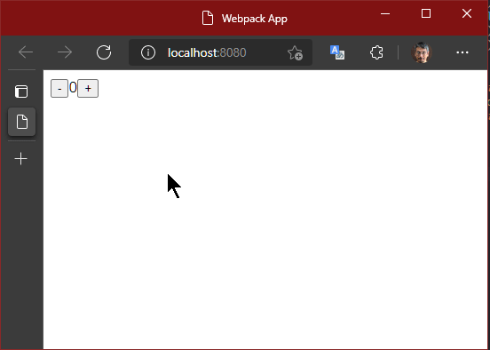

React の特徴と演習
ホームページ: React – ユーザインターフェース構築のための JavaScript ライブラリ
React は、Facebook が作ったフレームワークです。今最もメジャーなライブラリだと言っていいでしょう。
React の公式ページでは、3つの特徴があるとしています。それは、React の設計思想、モチベーション、ということになるかと思います。
１つずつ見てみましょう。
React の特徴
宣言的な View
宣言的とはなんでしょうか。宣言的の反対は、手続き的、と言えるでしょうか。
なにをするか、ではなく、何がやりたいか（何をやるのか）が明確だということとも言えるかもしれません。
React では、データを受け取って、それに従って描画するということに専念します。データの変更も自動で検知して、再レンダリングされるので、その処理を意識することは有りません。
コードの見通しがよく、管理がしやすくなります。
コンポーネントベース
React は、Webページを複数のパーツに分けて管理します。共通化される場合もありますが、管理のために分けることも多いです。
このパーツのことをコンポーネントと読んでいます。
コンポーネントに分けることで、その中でそれぞれの状態や処理を持つことが出来、カプセル化されます。単純化したコンポーネントを組み合わせることで、複雑な画面を作ることが出来ます。
また、HTMLもテンプレートを持つのではなく、そのコンポーネントの中で生成するので、入力値、状態によって、どのような出力がされるのかをコンポーネントの単位で把握できるので、非常に管理がしやすくなります。
一度学習すれば、どこでも使える
どこでも、というのはちょっと大げさですが、React は Webブラウザアプリで使うことが主ですが、サーバーサイドレンダリングでも使用できます。(要 Node.js)
また、React Nativeプラットフォームでは、React を使って、まるでWebアプリケーションを作るような感じで、モバイルのネイティブアプリ（しかも、iOS, Android ハイブリッド！）を作成することが出来ます。
React の演習
といっても、言葉では伝わりにくいので、実査に書いてみるのがいいですね。
ここでは、簡単にカウンターのアプリを作ってみます。

＋ボタンを押すと数字が足され、－ボタンを押すと減る、という単純なものです。
ここでのコンポーネントは、数値部分、ボタン部分、数値とボタンを組み合わせた部分 と3つに分けます。ボタン部分は、共通のコンポーネントとします。
細かすぎる感じがしますが、実際でもこのくらいまで細かくすることも多いと思います。
準備
1 2 | |
空のフォルダから始める場合は、前のセクションを参照して、npm init(yarn init でも可) と webpack init を作成してください。webpack では、TypeScript と React を使うようにします。
webpack のウィザードの選択肢
? Which of the following JS solutions do you want to use? Typescript ? Do you want to use webpack-dev-server? Yes ? Do you want to simplify the creation of HTML files for your bundle? Yes ? Do you want to add PWA support? No ? Which of the following CSS solutions do you want to use? none ? Do you like to install prettier to format generated configuration? Yes ? Pick a package manager: yarn [webpack-cli] ℹ INFO Initialising project... conflict package.json ? Overwrite package.json? overwrite this and all others # 'a' をタイプ
React と関連するライブラリをインストールします。
1 | |
TypeScriptのための型定義もインストールします。-D を忘れないようにします。
1 | |
TypeScript で後述する JSX を利用するので、tsconfig.json にそのオプションをつけておきます。また、 "moduleResolution" に "node" を、"files" も src/index.tsx としておきます。
index.ts のファイル名も index.tsx に変えておきます。
1 2 3 4 5 6 7 8 9 10 11 12 | |
webpack.config.js の entry も変更しておきます。
1 2 3 4 | |
以上で、準備はできました。
数値を表示するコンポーネントの作成
まず、数値の表示部分を作ります。ここでは、外から数値を受け取って、それをレンダリングすることだけを考えます。
ファイルは、src/DisplayNumber.tsx とします。拡張子が .tsx であることに注意してください。
1 2 3 4 5 6 7 | |
はじめに React をインポートしています。これは、コンポーネント作成する上で必須になります。
type は、外部からどのような値を受け取るか、その値のオブジェクトの型を宣言しています。
その下がコンポーネントの定義になります。このように、関数で定義します。
export とつけるのは、このコンポーネントを使う側が import でこの関数を参照できるようにするためです。
関数の引数には、外部からの値=プロパティが入ります。React.FCの < > には、そのプロパティの型を定義しているわけです。
関数の戻り値となる return には、HTMLのタグがまんま入っているように見えます。これは、JavaScript 内で、DOM（HTMLタグ）のようなものを書くことができる書式です。
これは、JSX と呼ばれる記法です。拡張子を .tsx としたのは、TypeScript の JSX で書かれることを表しています。
React は、JSX 記法でなくても書けるのですが、こちらのほうが直感的だと思います。
JSX 内では、{ } に変数や関数を書くことができ、動的な値を出力するときに使います。
JSX で書かれたタグは、仮想DOM と呼ばれますが、HTMLと異なるところがあります。例えば属性に class がありますが、それはJavaScript の予約語となっているため、className となります。
また、仮想DOM はオブジェクトでも有るため、下記のように変数に入れることが出来ます。不特定の数を出力するときなど、これを配列として使ったりします。
1 | |
Note
ボタンのコンポーネントの作成
ボタンは、＋および－で共通で使われることとします。ただし、ボタン上の表示と処理が異なります。
処理は、数値に +1 するか、-1 にするか、ですが、その数値自体はこのボタンで管理するものではありません。このボタンを使う側で管理するものです。
したがって、ボタンを押したときに何をするのか＝関数、を使う側からもらうようにしましょう。
プロパティとしては、ボタン上の文字（キャプション）とボタンを押したときの処理が書いてある関数とします。
src/IncrementalButton.tsx ファイルを作成します。
1 2 3 4 5 6 7 8 9 10 | |
HTMLの属性にも { } で動的に値を渡すことが出来ます。
このように、コンポーネントの引数に関数を入れることができるため、外から振る舞いを変える（依存性の注入: DI とも言います）ことが簡単にできます。
数値表示とボタンを組み合わせたコンポーネントの作成
これまで作ったコンポーネントを組み合わせたコンポーネントを作ってみましょう。
src/Counter.tsx ファイルを作成します。
また、カウントする数値はこのコンポーネント内でその値（状態）を管理します。よって、外部から値を受け取る必要はありません。
1 2 3 4 5 6 7 8 9 10 11 12 13 14 15 16 17 18 19 20 | |
import で作ったコンポーネントを参照します。
コンポーネントは、JSXのタグとして使用できます。このとき、プロパティを属性として渡します。
管理する数値を、useState で宣言します。引数は初期値です。
useState の戻り値はタプル型の配列で、1番目に状態の値（state, ここでは数値）、2番目に状態の値を変更するための関数となります。
状態（state, 値）を変える場合、値の変数を直接変更するのではなく、必ずこの関数を使う必要があります。
useCallback で、state の値に +1, -1 する処理を宣言しています。
この useCallback, useState については、この下の「React のパフォーマンスと Hooks」で説明します。
HTMLへの挿入
コンポーネントは作りましたが、それをHTMLのどこに当てはめるのか、ということが必要です。
また、それを行うファイルこそがアプリの起点（はじめに読み込まれるファイル）となります。
まず、index.html に、React のコンポーネントが描画される場所を作りましょう。
1 2 3 4 5 6 7 8 9 10 | |
id が "app" の div 要素に React をレンダリングするようにしましょう。
index.tsx を作成します。
1 2 3 4 5 | |
ここでも、コンポーネントを import して、render に渡すだけです。
描画先となる、HTMLの DOM を 通常のWebアプリでよく見る document.getElementById を使って取得しています。
これで完成です。ターミナルから yarn serve を実行してみましょう！
このように動作したでしょうか。

CSS in JS でスタイルを定義してみる
ボタンも小さくて、それぞれの隙間がなくて操作しづらいので、スタイルで調整してみましょう。
以前のセクションで CSS in JS のライブラリとして紹介した、"Emotion" を使ってみましょう。
何はさておき、インストールです。
1 | |
ボタンにスタイルを割り当ててみましょう。IncrementButton.tsx を開きます。
1 2 3 4 5 6 7 8 9 10 11 12 13 14 15 16 17 18 19 20 21 22 23 24 | |
1行目のコメントは、emotion を使うにあたって必要なもので、これがあることで、仮想DOMに本来無い css の属性が適用できます。また、React のインポートも必要なくなります。
emotion から参照した、css という関数でスタイルを定義します。
この関数に タグ付きテンプレート として、文字列で CSS を渡します。
ここでは、style というオブジェクトを定義して、その中でスタイルを定義していますが、直接変数に与えても構いません。ただ、コンポーネントの中で複数のスタイルを扱う場合、このようにオブジェクトにまとめておいたほうが、管理しやすいと思います。
スタイルを 仮想DOMに割り当てるには、タグの属性 css に定義した値を与えるだけです。
保存して実行してみましょう。スタイルが適用されました。

通常の HTMLとCSS を使ったスタイル定義では、それぞれ別のファイルに分かれて書きます。
そうすると、CSS の中で定義しているクラスなどが、どこで使われて、変更がどこに影響があるのかを管理するのが難しくなります。
React のコンポーネント内にパッキングすることで、部品とスタイルが同じところで管理されるため、関係性が非常にわかりやすくなります。
React のパフォーマンスと Hooks
上のコードは、useCallback を使わずに、下記のように書いても動作します。
1 2 3 4 5 6 7 8 9 10 11 12 13 14 | |
ただし、この書き方はパフォーマンスが低下します。
仮想DOM 自体や、仮想DOMのプロパティ（属性）に割り当てられている値（オブジェクト）が変わると、再レンダリング（DOMを作って置き換える）されます。
再レンダリングされるときには、コンポーネントの関数の作成と割り当てが毎回実行される、ということになります。
上の例では、Increment コンポーネントが再レンダリングされると、increment や decrement 関数が実行されるたびに再定義されます。
関数の内容が同じではありますが、関数オブジェクトとしては、毎回新しく作り直すことになるので、別なものとして認識されます。
よって、必要のないレンダリングが発生することになります。
useState や useCallback を使うことで、そこで宣言したものは メモ化 され、必要のない限り 再生成しないようになります。
必要のない限り、と書きましたが、どういった時に再生成が必要か、と疑問に思うでしょう。
関数の中で使用しているその外側の変数（上の例では、setCounter, counter）は、それを生成したときの値に固定され、いくらその値を書き換えても、その関数の結果は同じものを変えします。
useCallback の関数のあとにある第2引数の配列([counter, setCounter])は、それらの値が変更された時にその関数を作り直す、ということをします。
また、「値が変更される」というところも重要で、プログラム的には === で比較して同じかどうかを判断します。これは、オブジェクトの時に重要で、オブジェクト同士の比較は、同一オブジェクトかどうか、という判断になります。
同一オブジェクトかどうか、という判断についても正しい認識が必要です。この下の解説を参考にしてください。
useState についても、コンポーネント関数が複数回呼ばれても保持した値が（同一オブジェクトとして）変わらないようにするものです。値を変更する場合は、useState の戻り値の配列の２つ目の関数（ここでは、setCounter）を使う必要があります。
関数やオブジェクトの同一性
下の例を見てください。
1 2 3 4 5 6 7 | |
obj2 は、obj1 を代入してあり、これは同じオブジェクトを指し示しているので、比較結果は true となります。また、obj2 で変更したプロパティは obj1 も影響受けます。繰り返しになりますが、これはメモリ上のオブジェクトを参照しているからです。
obj3 は中身は同じですが、別に生成されたものなので、比較結果は false となります。
このように、オブジェクトの場合は、オブジェクトの扱いの意識を正しく持つ必要があります。

Note
尤も、このようなオブエジェクトの同一性に関しては React を使う上だけではなく、JavaScript を含め、Java や C# など他の言語、プラットフォームでも同様ですので、プログラマとして正しく把握しておく必要があるものです。
ただ、値渡し、参照渡し、といった議論になると、JavaScript 自体が他とは違いちょっと特殊です。詳しくは、下記参考のリンク先で勉強してください。
React では、今回の例のように小さい規模のものであれば問題はないですが、規模が大きくなるに連れ、影響は大きくなります。例えば、テキストボックスに1文字入力するたびに画面全部が再描画され、使い物にならない、ということにもなりますので、この理解は重要です。